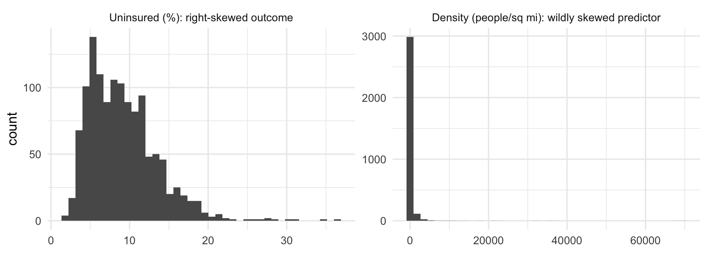
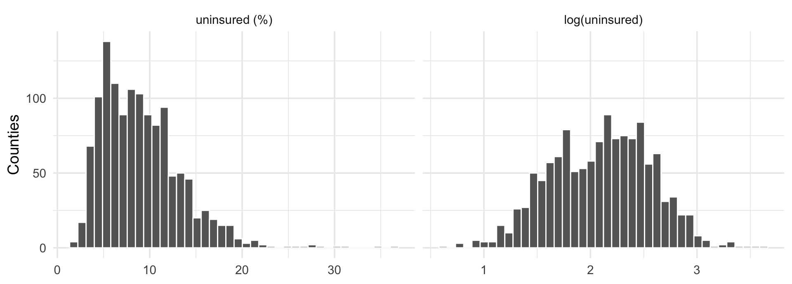
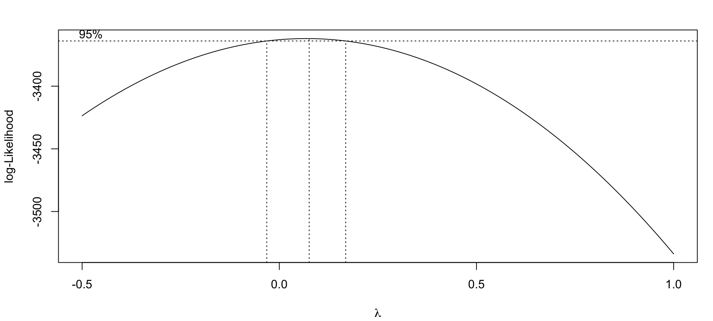
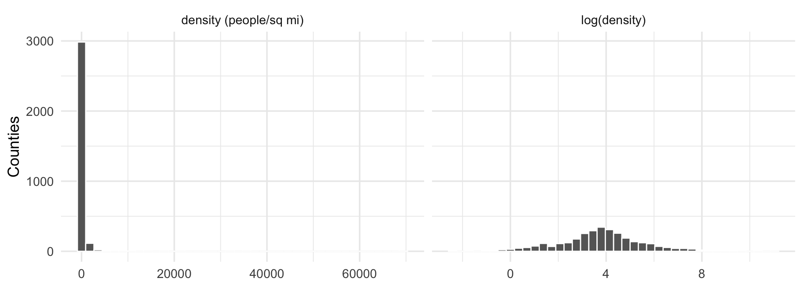
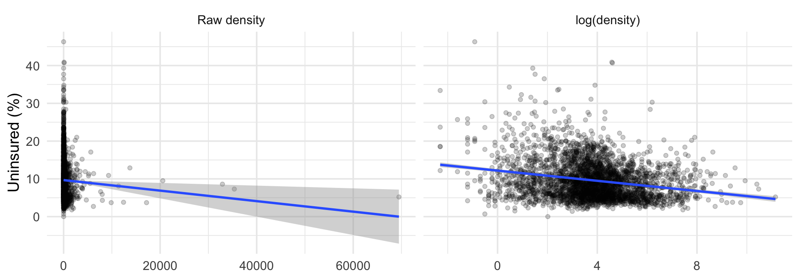

Regression I: Linear Regression with Modeling (GPH-GU 2353/3353)
2026-10-27

\log(y_i) = \beta_0 + \beta_1 x_{i1} + \cdots + \varepsilon_i \Longleftrightarrow\quad y_i = e^{\beta_0} \cdot e^{\beta_1 x_{i1}} \cdots \cdot e^{\varepsilon_i}
Histograms of uninsured on the raw and log scales:
hist_y <- cty |>
transmute(`uninsured (%)` = uninsured,
`log(uninsured)` = log(uninsured)) |>
pivot_longer(everything(), names_to = "scale", values_to = "value") |>
mutate(scale = fct_inorder(scale)) |>
ggplot(aes(value)) +
geom_histogram(bins = 40, fill = "grey40", color = "white") +
facet_wrap(~scale, scales = "free_x") +
labs(x = NULL, y = "Counties")
(Intercept) poverty bachelors median_age
3.0849 0.0157 -0.0155 -0.0210 poverty bachelors median_age
1.6 -1.5 -2.1 Box-Cox considers the family y^{(\lambda)} = (y^\lambda - 1)/\lambda, with \lambda = 0 meaning \log y, and profiles the likelihood over \lambda:

For our model the likelihood peaks at \hat\lambda \approx 0.07 with a 95% interval of roughly (-0.03, 0.16).
Density spans 0.1 to almost 70,000 people per sq mi: a linear term lets NYC set the slope for rural Kansas.
r2_raw r2_logx
0.002217547 0.054179990 
den |>
mutate(`Raw density` = density, `log(density)` = log(density)) |>
pivot_longer(c(`Raw density`, `log(density)`), names_to = "scale") |>
mutate(scale = fct_relevel(scale, "Raw density")) |>
ggplot(aes(value, uninsured)) +
geom_point(alpha = 0.2) +
geom_smooth(method = "lm") +
facet_wrap(~scale, scales = "free_x") +
labs(x = NULL, y = "Uninsured (%)")
A classmate models county hospital counts as log(hospitals + 1) ~ log(pop) and reports “each 1% increase in population is associated with a 0.9% increase in hospitals.”
Part B hands your pair a broken model: uninsured ~ density + pop, both predictors wildly skewed. Fix it with transformations, defend every choice, and write one strong-form log-scale interpretation.
GPH-GU 2353 · Week 8B